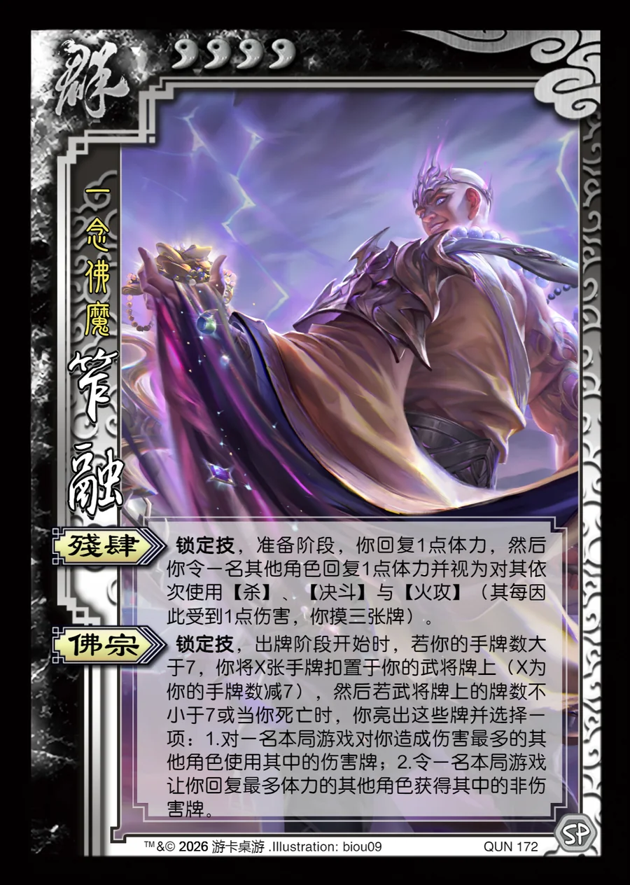

点击卡面查看大图
群
笮融
♥4一念佛魔
残肆锁定技
锁定技，准备阶段，你回复1点体力，然后你令一名其他角色回复1点体力并视为对其依次使用【杀】、【决斗】与【火攻】（其每因此受到1点伤害，你摸三张牌）。
佛宗锁定技
锁定技，出牌阶段开始时，若你的手牌数大于7，你将X张手牌扣置于你的武将牌上（X为你的手牌数减7），然后若武将牌上的牌数不小于7或当你死亡时，你亮出这些牌并选择一项：1.对一名本局游戏对你造成伤害最多的其他角色使用其中的伤害牌；2.令一名本局游戏让你回复最多体力的其他角色获得其中的非伤害牌。